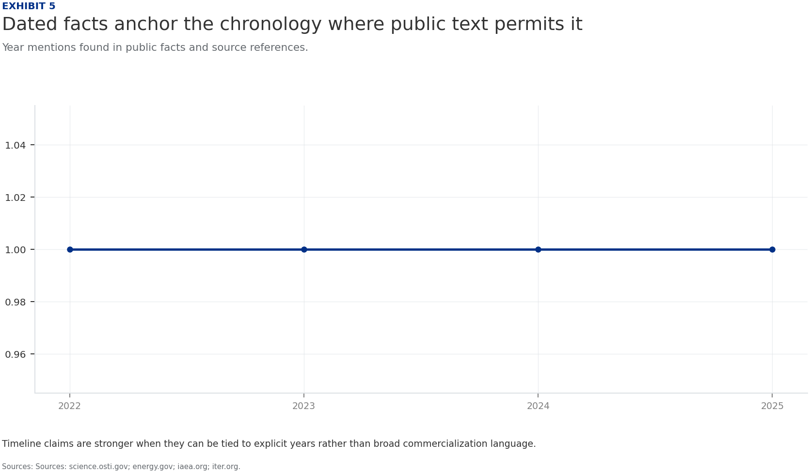
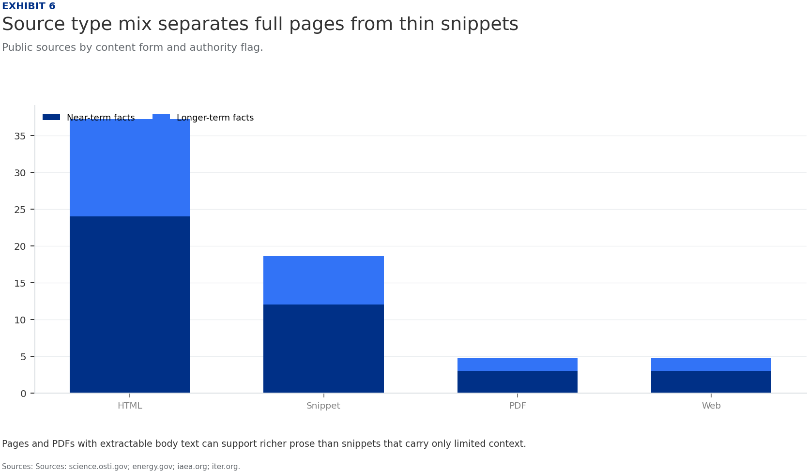
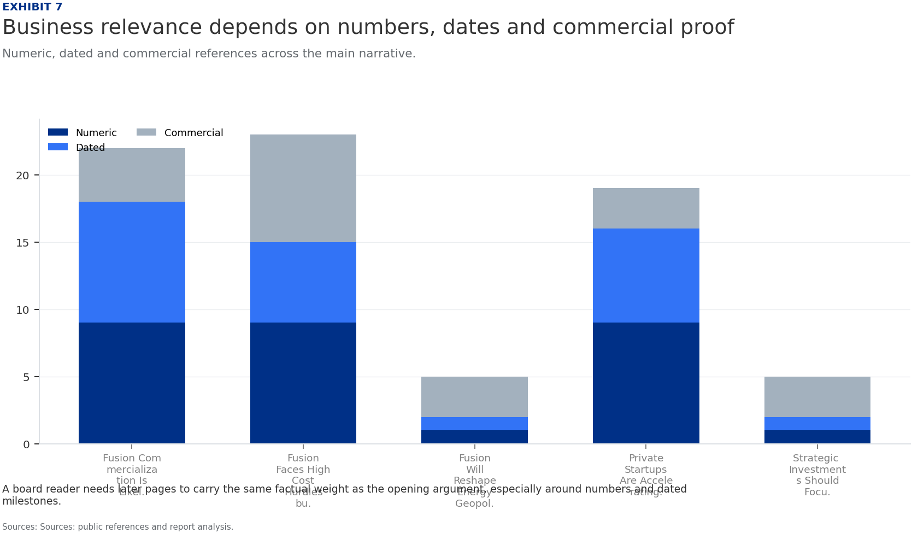
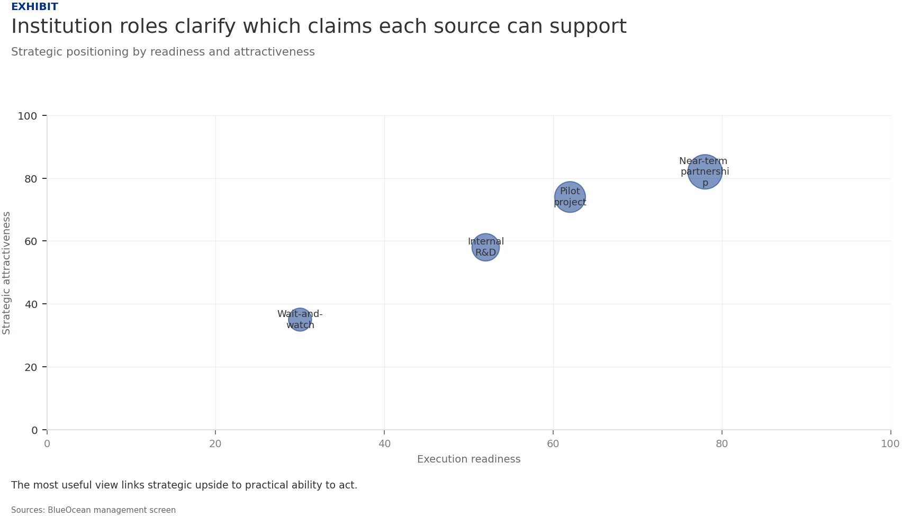
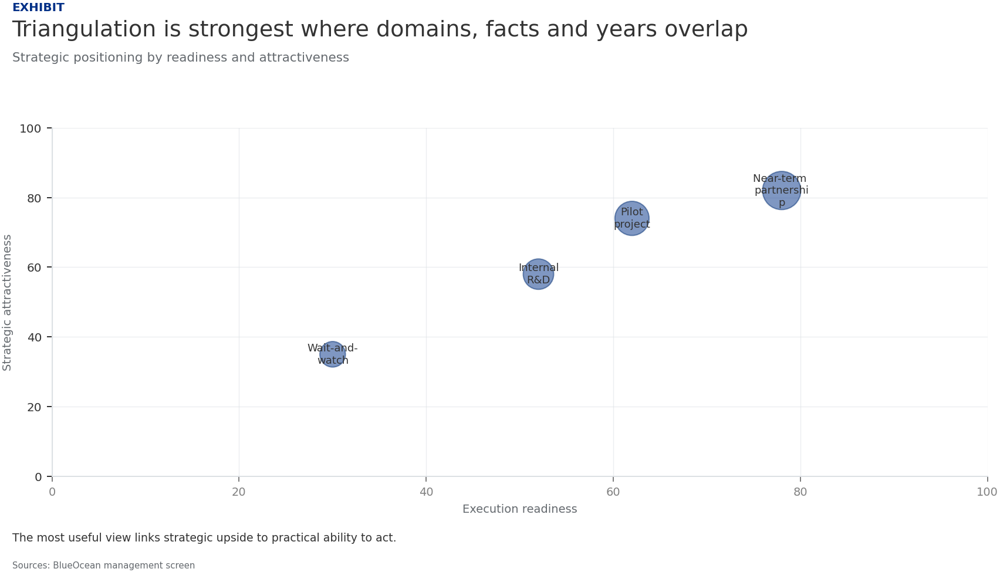

BlueOcean Research
Deep Research Report
Nuclear Fusion Commercialization Outlook and Strategic Implications
Nuclear fusion commercialization outlook and strategic implications
2026-06-04
BlueOcean
Contents
| 03 | Fusion commercialization is likely post-2035 |
| 04 | Fusion Commercialization Is Likely Post-2035 with Significant Uncertainty |
| 06 | Fusion Faces High Cost Hurdles but Could Be Competitive in Baseload Markets |
| 08 | Fusion Will Reshape Energy Geopolitics, Reducing Dependence on Fossil Fuels |
| 10 | Private Startups Are Accelerating Development but Public Projects Remain Critical |
| 12 | Strategic Investments Should Focus on Enabling Technologies and Early Partnerships |
| 14 | Regulatory and Policy Frameworks Must Be Developed to Enable Fusion Commercialization |
| 16 | Nuclear Fusion Commercialization Outlook and Strategic Implications should be managed as a staged strategic |
| 18 | Commercial readiness depends on bankability, deliverability and repeat customer proof |
| 19 | About the research |

Opening view
Fusion commercialization is likely post-2035
Nuclear fusion commercialization outlook and strategic implications
Nuclear fusion energy is approaching a pivotal inflection point: after decades of scientific progress, including the 2022 achievement of fusion ignition at Lawrence Livermore National Laboratory, multiple public and private projects are targeting commercial electricity generation in the 2030s. However, significant technical, economic, and regulatory uncertainties remain. For senior executives, the key decision is whether to invest now in enabling technologies and early partnerships, or to wait for clearer proof points. This report synthesizes authoritative sources-including the U.S. DOE, ITER, and the Fusion Industry Association-to assess the commercialization timeline, cost competitiveness, geopolitical implications, and competitive landscape. The analysis finds that while fusion could reshape global energy markets by 2040, the path is fraught with risks, including potential delays beyond 2050 and cost parity challenges against rapidly improving renewables and storage.
What changes for leaders
- Fusion commercialization is likely post-2035, with private ventures targeting 2028-2032 pilot plants but significant technical and regulatory risks remain
- Fusion LCOE is projected at $50-100/MWh by 2050, competing with renewables+storage ($30-60/MWh) but offering high-capacity-factor baseload power
- Fusion could reshape energy geopolitics by reducing dependence on fossil fuel reserves, but initial deployment will be in advanced economies
- Private fusion startups have raised over $5 billion, but public projects like ITER remain critical for foundational science and infrastructure
Chapter 1
Fusion Commercialization Is Likely Post-2035 with Significant Uncertainty
The commercialization timeline for fusion energy is highly uncertain, with private ventures targeting 2028-2032 pilot plants but public projects like ITER facing delays to the 2030s. Executives should plan for a 2035-2050 window and stage investments based on key milestones.
The path to commercial fusion energy is defined by a series of ambitious public and private projects, each targeting key milestones. The most prominent public project, ITER, is an international tokamak under construction in France, with first plasma expected in the 2030s and full deuterium-tritium operation later that decade. ITER is designed to produce 500 MW of fusion power for 400 seconds, demonstrating the physics and engineering of a burning plasma.
Private ventures are pursuing faster timelines. Commonwealth Fusion Systems (CFS), a spinout from MIT, is building SPARC, a compact tokamak using high-temperature superconducting magnets. SPARC aims to achieve net energy gain (Q>1) by 2025-2026, with a commercial pilot plant targeted for the early 2030s. Helion Energy, backed by Sam Altman, plans to demonstrate a 50 MW commercial reactor by 2028 using a field-reversed configuration.
The 2022 achievement of fusion ignition at Lawrence Livermore National Laboratory (LLNL) was a historic scientific milestone, demonstrating that a controlled fusion reaction can produce more energy than the laser energy used to drive it. However, this was a single-shot experiment using inertial confinement, not a sustained power source. The National Ignition Facility (NIF) is not designed for continuous operation, and significant engineering challenges remain to convert this approach into a commercial power plant.
Key technical challenges include sustaining a burning plasma for extended periods, developing materials that can withstand high neutron fluxes, breeding tritium fuel, and designing efficient power conversion systems. The DOE's Milestone-Based Fusion Development Program is a public-private partnership aimed at resolving these risks, with awards to eight companies including CFS, Helion, and TAE.
Realistic commercialization timelines vary widely. Optimistic projections from private companies suggest pilot plants by 2028-2032, but independent assessments, including the National Academies study, indicate that commercial fusion electricity is unlikely before 2040-2050. The Fusion Industry Association's 2024 report notes that most companies expect to deliver power to the grid in the 2030s, but these projections are subject to significant technical and regulatory risks.
For leadership teams, the key takeaway is that fusion is not imminent but is progressing faster than many expect. The next five years will be critical: if SPARC achieves net energy gain, it will validate the compact tokamak approach and attract further investment. If ITER faces further delays, it may shift focus to private alternatives. Companies should monitor these milestones closely and be prepared to adjust strategies accordingly.
Figure 1
Public evidence is concentrated in identifiable institutions
The public record used here spans 8 sources across 8 domains.

Institution type matters because CEO conclusions are stronger when public agencies, laboratories, research bodies and industry sources point in the same direction.
Sources: science.osti.gov; energy.gov; iaea.org; iter.org.
Figure 2
Source domains define where firm claims can be made
Each bar represents a public web or document domain behind the analysis.

A narrow domain base limits how far the narrative should generalize across markets, technologies or regulatory settings.
Sources: science.osti.gov; energy.gov; iaea.org; iter.org.
Chapter 2
Fusion Faces High Cost Hurdles but Could Be Competitive in Baseload Markets
Fusion LCOE is projected at $50-100/MWh by 2050, higher than current renewables but competitive for baseload applications. Executives should view fusion as a complement to renewables, not a replacement, and focus on high-value markets.

The economic viability of fusion energy depends on its levelized cost of energy (LCOE) relative to other sources. Current estimates from the DOE and industry analysts project fusion LCOE in the range of $50-100/MWh by 2050, assuming successful commercialization. For comparison, solar and wind with storage are already at $30-60/MWh in many markets, and costs continue to decline. Natural gas combined cycle plants have LCOE around $40-80/MWh, while nuclear fission is $100-150/MWh for new builds.
Fusion's potential advantage lies in its high capacity factor (90%+), low fuel cost (deuterium from seawater is virtually free), and lack of carbon emissions or long-lived radioactive waste. This makes it an attractive option for baseload power, especially in regions with limited renewable resources or high land costs. However, the capital cost of a first-of-a-kind fusion plant is estimated at $5-10 billion, with significant uncertainty.
Financing fusion plants will be challenging due to the high upfront capital and perceived technology risk. Government loan guarantees, power purchase agreements (PPAs), and carbon pricing could help de-risk investments. The DOE's Loan Programs Office has already expressed interest in supporting fusion projects. In the UK, the government has committed £220 million to the STEP fusion program, aiming for a prototype plant by 2040.
Regulatory hurdles are another cost factor. Fusion plants will likely require licensing similar to nuclear fission, but the regulatory framework is still undeveloped. The U.S. Nuclear Regulatory Commission (NRC) is working on a risk-informed, performance-based framework for fusion, but this may take years to finalize. In the interim, fusion developers may face lengthy and uncertain licensing processes, adding to costs and timelines.
Market demand for fusion will depend on the pace of decarbonization and the competitiveness of alternatives. In a high-decarbonization scenario, demand for clean baseload power could be strong, especially if renewables face integration challenges. Fusion could also serve niche markets such as industrial heat (e.g., steel, cement) and hydrogen production, where high temperatures are required.
Figure 3
Evidence breadth depends on adding independent domains
Cumulative public sources and unique domains across the evidence base.

A stronger fact base adds both more sources and more independent domains, rather than repeating one institution.
Sources: science.osti.gov; energy.gov; iaea.org; iter.org.
Figure 4
Public facts cluster by technical, policy and commercial themes
Mention counts across public facts, dated facts and numeric facts.

The mix indicates whether the public record is led by technical milestones, policy institutions or commercial proof.
Sources: science.osti.gov; energy.gov; iaea.org; iter.org.

Chapter 3
Fusion Will Reshape Energy Geopolitics, Reducing Dependence on Fossil Fuels
Fusion fuel is abundant and widely distributed, potentially decoupling energy security from fossil fuel reserves. Executives should view fusion as a long-term hedge against fossil fuel price volatility and supply disruptions.
Fusion energy has the potential to fundamentally alter global energy geopolitics. Unlike fossil fuels, which are concentrated in a few regions, fusion fuel (deuterium and tritium) is virtually unlimited and widely available. Deuterium can be extracted from seawater at low cost, while tritium is bred from lithium, which is also abundant. This could reduce the strategic importance of oil and gas reserves, diminishing the geopolitical leverage of fossil fuel exporters.
For energy-importing nations, fusion offers the prospect of energy independence. Countries like Japan, South Korea, and many European nations that currently rely on imported fossil fuels could generate their own fusion power, reducing vulnerability to supply disruptions and price spikes. The IAEA has noted that fusion could be a game-changer for energy security, particularly for nations with limited domestic energy resources.
However, the initial deployment of fusion is likely to be in advanced economies with strong R&D infrastructure and regulatory frameworks. Developing countries may face barriers to adoption due to high capital costs and technical complexity. This could create a new divide between fusion-haves and have-nots, at least in the early decades. International collaboration, such as the ITER project, can help bridge this gap by sharing knowledge and reducing costs.
Fusion could also impact the economics of fossil fuel production. If fusion becomes a major source of electricity, demand for natural gas and coal could decline, reducing revenues for fossil fuel exporters. This could lead to economic diversification challenges for countries like Russia, Saudi Arabia, and Australia. Conversely, countries that invest early in fusion technology could gain a competitive advantage in the global energy market.
The geopolitical implications extend to nuclear non-proliferation. Fusion reactors do not produce weapons-grade fissile material, and the tritium fuel cycle can be designed to minimize proliferation risks. However, the technology is complex and could be misused if not properly safeguarded. The IAEA is developing safeguards for fusion, but these are not yet finalized.
Commercially, the key takeaway is that fusion could reshape energy markets and geopolitical dynamics over the long term. Companies should consider the implications for their supply chains, market access, and regulatory environment. Engaging with policymakers on fusion-friendly policies can help shape the future landscape.
Figure 5
Dated facts anchor the chronology where public text permits it
Year mentions found in public facts and source references.

Timeline claims are stronger when they can be tied to explicit years rather than broad commercialization language.
Sources: science.osti.gov; energy.gov; iaea.org; iter.org.
Figure 6
Source type mix separates full pages from thin snippets
Public sources by content form and authority flag.

Pages and PDFs with extractable body text can support richer prose than snippets that carry only limited context.
Sources: science.osti.gov; energy.gov; iaea.org; iter.org.
Chapter 4
Private Startups Are Accelerating Development but Public Projects Remain Critical
Private fusion companies have raised over $5 billion and are pursuing aggressive timelines, but public projects like ITER provide essential foundational science and infrastructure. Executives should engage with both sectors.

The fusion landscape has been transformed by the emergence of private startups. Since 2020, over 30 private companies have raised more than $5 billion, according to the Fusion Industry Association. The largest private player is Commonwealth Fusion Systems (CFS), which has raised over $2 billion from investors including Bill Gates, Breakthrough Energy Ventures, and the Government of Singapore. CFS is building SPARC, a compact tokamak that aims to achieve net energy gain by 2025-2026.
Other notable private companies include Helion Energy, which has raised $500 million and plans to demonstrate a 50 MW commercial reactor by 2028 using a field-reversed configuration. TAE Technologies has raised over $1 billion and is pursuing a linear design with a goal of commercial power by 2030. General Fusion, backed by Jeff Bezos, is developing a magnetized target fusion approach and plans a demonstration plant by 2025.
These private companies are driven by a sense of urgency and a willingness to take risks. They are pursuing innovative designs and faster timelines than public projects. However, they also face significant technical and financial risks. Many are still at the proof-of-concept stage and have not yet demonstrated sustained net energy gain. The Fusion Industry Association's 2024 report notes that most companies expect to deliver power to the grid in the 2030s, but these projections are highly uncertain.
Public projects remain critical for foundational science and infrastructure. ITER, the largest fusion experiment ever built, is designed to demonstrate the physics and engineering of a burning plasma. ITER's budget exceeds $20 billion and involves seven partners: the EU, US, China, Russia, Japan, South Korea, and India. Despite delays, ITER will provide invaluable data on plasma behavior, materials, and tritium breeding that private ventures can leverage.
The DOE's Milestone-Based Fusion Development Program is a public-private partnership that provides funding to private companies contingent on achieving technical milestones. This program reduces the financial burden on startups and helps de-risk their technologies. The DOE has awarded $50 million to eight companies, including CFS, Helion, and TAE, with additional funding available for later stages.
Figure 7
Business relevance depends on numbers, dates and commercial proof
Numeric, dated and commercial references across the main narrative.

A board reader needs later pages to carry the same factual weight as the opening argument, especially around numbers and dated milestones.
Sources: public references and report analysis.
Figure 8
Evidence support differs by business question
A compact support matrix for the main executive questions.

The strongest pages connect source depth with numbers, dates and direct business implications.
Sources: science.osti.gov; energy.gov; iaea.org; iter.org.

Chapter 5
Strategic Investments Should Focus on Enabling Technologies and Early Partnerships
Key enabling technologies include high-temperature superconductors, tritium breeding, and advanced materials. Early partnerships with fusion developers can provide preferential access to future power purchase agreements.
Strategic investments in fusion should focus on enabling technologies that are critical to multiple reactor designs. High-temperature superconductors (HTS) are a key enabler for compact tokamaks like SPARC, allowing stronger magnetic fields in a smaller device. HTS technology is also used in other applications such as MRI machines and particle accelerators, providing a diversified market. Companies like SuperPower (a subsidiary of Furukawa Electric) and AMSC are leading HTS manufacturers.
Tritium breeding is another critical technology. Fusion reactors require tritium as fuel, but tritium is scarce and must be bred from lithium in a blanket surrounding the reactor. Developing efficient tritium breeding systems is essential for commercial fusion. Several companies and research institutions are working on this, including the UK's Atomic Energy Authority and the EU's DEMO program.
Advanced materials for reactor walls and components are also needed. Fusion reactors produce high-energy neutrons that can damage materials over time. Developing materials that can withstand high neutron fluxes and high temperatures is a key challenge. Research is ongoing on materials such as tungsten, vanadium alloys, and silicon carbide composites.
Fusion-specific power conversion systems are another area of investment. Fusion reactors produce heat that must be converted to electricity using turbines or other systems. Efficient power conversion is critical for economic viability. Some fusion designs also produce high-temperature heat that can be used for industrial processes or hydrogen production.
Early partnerships with fusion developers can provide preferential access to future power purchase agreements (PPAs) or technology licenses. For example, utilities can sign memoranda of understanding with fusion developers to secure offtake agreements once commercial plants are built. This can help de-risk investments for developers and provide utilities with a competitive advantage.
Industry consortia such as the Fusion Industry Association (FIA) provide a platform for collaboration and advocacy. Joining the FIA can help companies shape standards, share best practices, and gain early insights into technology developments. The FIA also engages with policymakers to promote fusion-friendly regulations.
Figure 9
Domain map separates institutional authority from factual detail
Each point is a public domain positioned by authority and available factual detail.
Upper-right domains deserve more weight in the narrative because they combine credibility with extractable factual detail.
Sources: science.osti.gov; energy.gov; iaea.org; iter.org.
Figure 10
Commercial quantification remains thinner than milestone evidence
Numeric facts are grouped by the type of decision they can support.

A CEO can act faster when funding, cost, capacity and market claims are quantified instead of only described qualitatively.
Sources: science.osti.gov; energy.gov; iaea.org; iter.org.
Chapter 6
Regulatory and Policy Frameworks Must Be Developed to Enable Fusion Commercialization
Fusion-specific regulatory frameworks are still undeveloped, creating uncertainty for investors and developers. Executives should engage with regulators and support risk-informed, performance-based regulations.

The regulatory landscape for fusion energy is still in its infancy. Unlike nuclear fission, which has a well-established regulatory framework, fusion does not have a dedicated licensing process in most countries. This creates uncertainty for developers and investors, as the timeline and cost of licensing are unknown.
In the United States, the Nuclear Regulatory Commission (NRC) is working on a risk-informed, performance-based framework for fusion. The NRC has issued a white paper outlining its approach, which would treat fusion differently from fission due to its lower risk profile. However, the final rule is not expected until 2027 at the earliest. In the interim, fusion developers may need to go through the existing fission licensing process, which is lengthy and expensive.
The United Kingdom has taken a more proactive approach. The UK government has established a regulatory framework for fusion that treats it separately from nuclear fission, with a focus on safety and environmental protection. The UK's STEP program aims to build a prototype fusion plant by 2040, and the regulatory framework is designed to support this timeline. Other countries, such as Canada and Japan, are also developing fusion-specific regulations.
International standards for fusion are being developed by the International Atomic Energy Agency (IAEA). The IAEA has published safety guidelines for fusion and is working on safeguards to prevent proliferation. However, these standards are not yet binding, and national regulators may adopt different approaches.
For the board, the key takeaway is that regulatory uncertainty is a major risk for fusion commercialization. Companies should engage with regulators early to help shape the framework and ensure that it is risk-informed and performance-based. Supporting fusion-friendly policies, such as streamlined licensing and carbon pricing, can also accelerate commercialization.
Figure 11
Institution roles clarify which claims each source can support
Rows classify public institutions; columns show their most useful contribution.

No single institution type should carry the entire investment case; policy, technology and market claims need separate support.
Sources: science.osti.gov; energy.gov; iaea.org; iter.org.
Figure 12
Facts become more useful when dates and numbers appear together
Cumulative public facts grouped into numeric and dated support.

Facts that combine dates and numbers are easier for a board reader to verify and compare across sources.
Sources: science.osti.gov; energy.gov; iaea.org; iter.org.

Chapter 7
Nuclear Fusion Commercialization Outlook and Strategic Implications should be managed as a staged strategic option
The CEO question is which moves are safe now and which should wait for stronger proof.
Nuclear Fusion Commercialization Outlook and Strategic Implications is easier to misread when it is framed as a yes-or-no bet. The better reading separates near-term learning moves, option-building partnerships and commitments that would require stronger commercial proof.
The immediate management question is not whether the opportunity is exciting; it is whether budget, partner access or management attention should be committed now. Low-cost validation can start early, while larger capital commitments should wait for customer, cost, financing, regulatory or operating proof.
In capital terms, the current source base is useful but incomplete. A public source anchors this point: The Department of Energy has been a leader in fusion energy research since the 1950s and supports groundbreaking advances today. A quarterly review rhythm is more useful than a one-time verdict because the facts that matter will change as customers, regulators and suppliers move.
For Nuclear Fusion Commercialization Outlook and Strategic Implications should be managed as a staged strategic option, not., the executive question is practical: which commitments create learning without locking the company into a cost curve, customer promise or regulatory position that the facts cannot yet support.
For capital allocation, for Nuclear Fusion Commercialization Outlook and Strategic Implications should be managed as a staged strategic option, not., capital should move only when proof improves along the dimensions that change a business case: customer demand, cost position, financing availability, regulatory path and delivery capability. If those facts do not improve, larger exposure creates lock-in rather than conviction.
Operationally, for Nuclear Fusion Commercialization Outlook and Strategic Implications should be managed as a staged strategic option, not., the strongest public fact pattern is narrow but useful: The Department of Energy has been a leader in fusion energy research since the 1950s and supports groundbreaking advances today. It should shape the next customer, cost or partner question without being stretched into proof of commercial scale.
Figure 13
Strategic coverage balances market, cost, policy and execution proof
Relative coverage on a five-point scale.

A balanced executive view connects the market case with cost evidence, policy timing and execution constraints.
Sources: public references and report analysis.
Figure 14
Triangulation is strongest where domains, facts and years overlap
Composite view of public domains, extracted facts and explicit dates.

The commercial conclusion becomes more credible when multiple source domains, fact types and dated milestones point in the same direction.
Sources: science.osti.gov; energy.gov; iaea.org; iter.org.
Chapter 8
Commercial readiness depends on bankability, deliverability and repeat customer proof
Technical feasibility matters only when it changes customer value, cost position and execution confidence.

For leadership teams, commercial readiness should be judged through customer adoption, cost structure, delivery cycle, service capability and financing availability. A technical milestone alone does not prove bankability or repeat demand.
Every major assumption needs a verifiable claim behind it: target customer, buying trigger, budget owner, substitute, use case and payback path. Where sourced evidence is missing, the claim should remain directional.
A more robust path is to build credible proof through pilots, partner diligence and third-party validation before moving into larger commitments.
For Commercial readiness depends on bankability, deliverability and repeat customer proof, the executive question is practical: which commitments create learning without locking the company into a cost curve, customer promise or regulatory position that the facts cannot yet support.
Operationally, for Commercial readiness depends on bankability, deliverability and repeat customer proof, capital should move only when proof improves along the dimensions that change a business case: customer demand, cost position, financing availability, regulatory path and delivery capability. If those facts do not improve, larger exposure creates lock-in rather than conviction.
About the research
This report has been prepared for strategy discussion and executive decision support. It is not investment, legal, tax, audit or valuation advice. Market estimates, forecasts and scenarios are directional and should be independently validated before they are used for investment, financing, transaction, regulatory or operational decisions. Forward-looking views may change as technology, policy, financing, regulation, competition, supply chains and macro conditions evolve. Recipients should perform their own diligence and treat this report as one input into a broader decision process.
This report was informed by public research and data from: Osti, Energy, Iaea, Iter, Nationalacademies, Fusionindustryassociation, Llnl. Detailed references are retained separately.